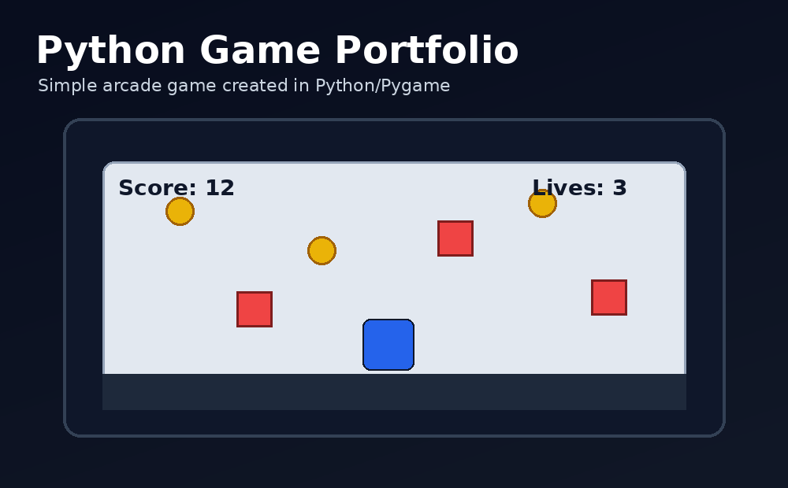

Python Game
This page shows an additional Python/Pygame-style arcade game as a programming portfolio section, similar to the example website.
Coin Dodger Game
The player moves left and right to collect coins while avoiding falling red blocks. The game includes collision detection, score tracking, restart logic, and simple object-oriented classes.
Player classCoin classRock classCollision detection

Controls
Arrow keys move the player. Restart can be handled using the R key.
Game Goal
Collect yellow coins and avoid red obstacles to increase the score.
Programming Concepts
Classes, loops, events, random object spawning, and collision checks.